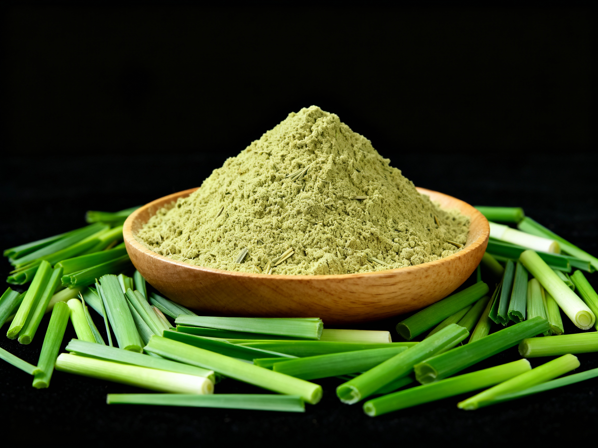

Shade Dried Lemon Grass Powder
Naturally shade-dried at ambient temperatures to preserve the volatile essential oils (citral), intense citrus aroma, and vivid green color. Heavily requested by German herbal tea blenders, European botanical houses, gourmet spice packagers, and wellness tea brands.
Drying Method: Natural Shade Drying
Color Profile: Natural Bright Green
Shelf Life: 12 – 18 Months
Standard MOQ: 500 kg
Primary Global Target Uses:
- Premium herbal teas, wellness infusions, and green tea flavor blends (Germany, UK, USA).
- Artisanal seasoning rubs, Thai/Southeast Asian culinary pre-mixes, and marinades.
- Natural cosmetic formulations, soaps, and herbal bath salts.